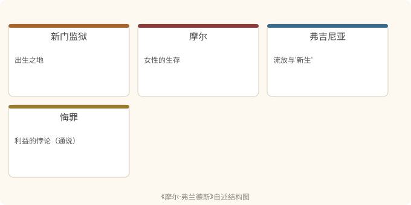

摩尔·弗兰德斯
一、基本信息
| 作者 | 丹尼尔·笛福 |
|---|---|
| 成书/出版 | 1722年（Britannica：Moll Flanders (1722)——B293） Daniel Defoe — Encyclopaedia Britannica（百科全书） |
| 国别/地区 | 英国 |
| 时代 | 近代 · 18世纪 |
| 体裁 | 长篇小说 |
| 语言 | 英语 |

《摩尔·弗兰德斯》自述结构图（主题·结构图）
二、创作背景
Britannica（B293）：'Daniel Defoe is best known as the writer of the novels Robinson Crusoe (1719) and Moll Flanders (1722).'（B293）。
题材（通说待核）：新门监狱出生的摩尔——12年妓女、12年窃贼、8年弗吉尼亚流放的'悔罪'自述。
三、内容脉络
摩尔的自述：从出生（新门监狱）到弗吉尼亚的种植园（通说待核）。
'悔罪'与利益的悖论（通说待核）。
四、主要人物表
| 人物 | 身份 | 说明 |
|---|---|---|
| 摩尔·弗兰德斯 | 叙述者 | （通说待核） |
五、主题与艺术特点
- 女性生存的'经济'书写（通说待核）。
- '悔罪体'与利益的悖论（通说待核）。
- 18世纪伦敦底层（通说）。
六、影响与评论
- Britannica：笛福 best known 作品之一（B293）。
Daniel Defoe — Encyclopaedia Britannica（百科全书） - 作者页：笛福'英国小说之父'关联问答（B293——待核）。
Daniel Defoe — Encyclopaedia Britannica（百科全书）
七、阅读建议
难点
- 18世纪货币与刑律。
- 伪自传的语气。
- 《摩尔·弗兰德斯》（人民文学出版社，通说待核）。
- 英文原版（公有领域）。
笛福双璧之二。
八、待核实
- 1722年出版细节核对。
- 摩尔12年妓女/12年窃贼/8年殖民地说核对。
- '悔罪'结构待核。
本页主要来源
丹尼尔·笛福的其他收录作品：摩尔·弗兰德斯